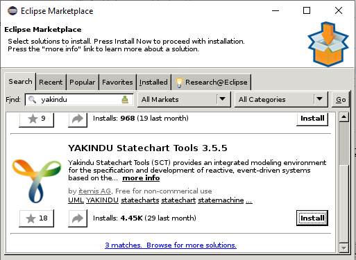
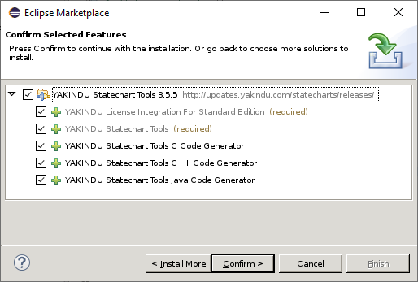
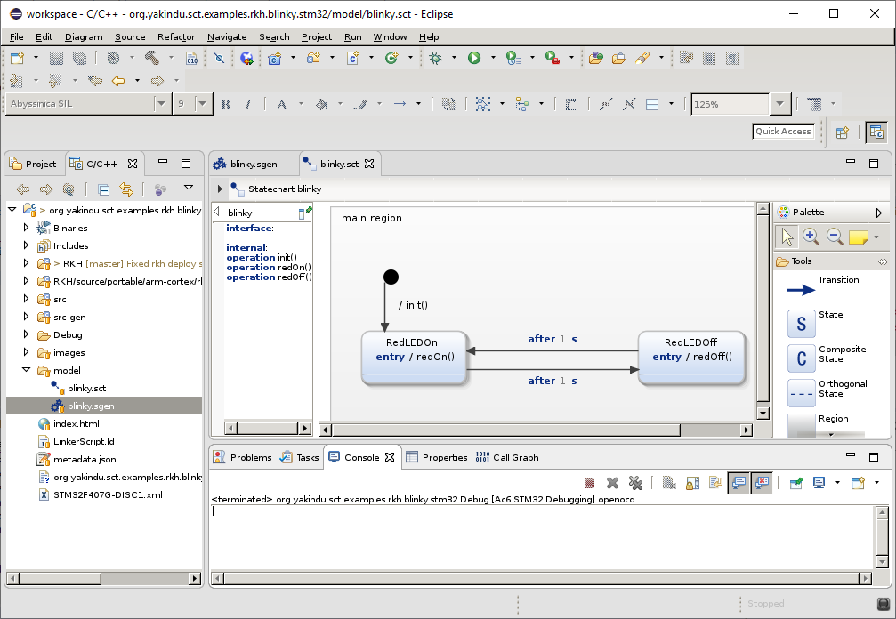
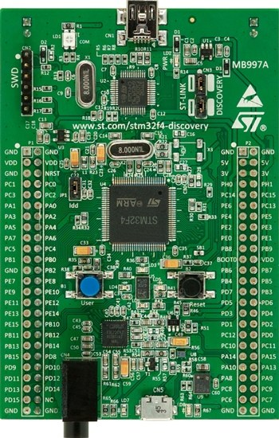
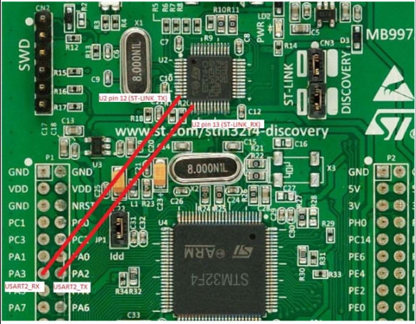
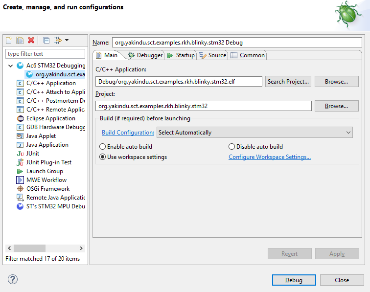

Blinky LED for RKH framework on STM32
Overview
This is a simple example of how to use the RKH framework together with Yakindu Statechart Tool and AC6 System Workbench for STM32.

This tutorial contains:
4. Yakindu project on SW4STM32
5. Runing on STM32F407F-DISC1 board
Blinky Statechart Model
The behavior of Blinky is defined by a simple statechart that looks as follows.

What RKH is?
RKH is a flexible, efficient, highly portable, and freely available open-source state machine framework providing the infrastructure for quickly and safely developing reactive applications for real-time embedded systems.

RKH provides not only an unusual, efficient and straightforward method for implementing and executing state machines, but also the needed infrastructure to build reactive applications in embedded systems. It is composed of modules, procedures, and supporting tools; such as a method for implementing and executing flat state machines and statecharts, asynchronous messaging, cross-platform abstraction, run time tracing, time management, dynamic memory mechanism to deal with fragmentation, unit-test harness, plus others.
RKH allows developers to verify and validate a reactive application’s behaviour at runtime by means of the framework’s built-in tracer. It can utilize any traditional OS/RTOS or work without one. It also encourages the embedded software community to apply best principles and practices of software engineering for building flexible, maintainable and reusable software.
RKH is open source and licensed under the GNU v3.0. You can find the source code on GitHub.
If you want to learn more about the benefits of this flexible, efficient and highly portable state machine framework read on here.
Toolchain installation
Install AC6 System Workbench for STM32 (SW4STM32)
The System Workbench toolchain, called SW4STM32, is a free multi-OS software development environment based on Eclipse, which supports the full range of STM32 microcontrollers and associated boards.

Download Linux installer from here: SW4STM32-V2.9-lnx64
Install YAKINDU SCT Plugin
Go to Eclipse Marketplace and type yakindu in search box:

Select and confirm all features

Install RKH code generator
If code generation does not work and Yakindu shows error markers on the model/Blinky.sgen file then you likely have to install the Yakindu RKH code generator. This can be done in the example wizard or in the SGen wizard.
- Open File > New > Code generator module
- Click on 'next'
- Choose a 'Generator' and click on 'Install more..'
- Follow the instructions and select the RKH Generator
- Finish and Restart.
Get RKH framework
In order to build this example you have to download the RKH framework and install the Trazer tool. RKH can be obtained from its official repository by using the following Git commands:
cd path/to/org.yakindu.sct.examples.rkh.blinky.stm32/git clone https://github.com/vortexmakes/RKH.git
Install Trazer tool
RKH allows developers to verify and validate a reactive application’s behaviour at runtime by means of its built-in tracer. In addition, RKH provides a very simple but powerful console application, called Trazer, to visualize the trace events’ output in a legible manner. It can be downloaded and installed as follows.
- Download Trazer for Linux 64-bits from its official repository
- Copy downloaded file to a folder and extract it
- Change the directory to previous folder
- Check it is alright by executing ./trazer
Yakindu project on SW4STM32
Project structure
- model
- contains Blinky state machine (blinky.sct) and generator model (blinky.sgen)
- src
- Includes both application code and BSP (Board Support Package) code. The most important files and directories are listed below:
- signals.h: defines signals as enumerated constants, which are used as state machine triggers.
- main.c: contains the main() function, which initializes both BSP and Blinky active object, then executes the RKH framework in order to orchestrates this reactive application.
- rkhcfg.h: adapts and configures RKH in compile time.
- bsp: this folder contains the source code of BSP for STM32 bare metal platform. It handles interrupts, implements the communication with Trazer tool and setups the RKH native non-preemptive cooperative scheduler for dispatch events. The hardware inicialization and peripherals access routines are autogenerated with STM32CubeMX tool from STM32CubeMX.ioc file located in STM32CubeMX folder. In the Yakindu’s Standard Edition you cannot include header files, but it is possible to create operations, in which the platform specific C code can be called. Within these operations we can call the specific code to interact with the platform, which is located in this folder.
- src-gen
- Includes the generated C code compatible with RKH framework, which will be automatically be updated when you edit and save the statechart.
- Blinky.h/.c: specifies and implements the state machine of Blinky active object. Please correlate this implementation (Blinky.c) with the state diagram shown above.
- BlinkyAct.h/.c: specifies and implements the state machine actions (entries, exits, effects and guards).
- BlinkyActRequired.h: in the Yakindu’s Standard Edition you cannot include header files, but it is possible to create operations, in which the Blinky specific c code can be called. Within these operations we can call the specific C code to interact with the platform.
- RKH
- Here is located the RKH framework’s source code.

Build
- Right-click on project 'org.yakindu.sct.examples.rkh.blinky.stm32' in the 'Project Explorer'
- Choose 'Build Project'
Runing on STM32F407F-DISC1 board
Hardware Setup
The STM32F407G-DISC1 allows users to easily develop applications with the STM32F407VG high performance microcontroller with the ARM® Cortex®-M4 32-bit core. It includes everything required either for beginners or for experienced users to get quickly started.

The demo toggles the LD5 (red) to on/off according to redOn() / redOff() calls.
For running the Blinky demo the default jumper configuration must be sets.
The BSP for Blinky Demo on STM32, allocate de RKH trace stream output on the USART2 peripheral, available on PA3 and PA2 pins of P1 connector.
There are two ways to visualize RKH trace output with Trazer:
These pins are not connected to the USART of the STM32F407 microcontroller but may be usables flywiring ST-LINK/V2-A virtual COM port (ST-LINK VCP on U2 pin 12 and 13) to STM32F407 USART2 (PA2 and PA3: P1 pin 14 and 13) as shown in the Figure below:

Configure Trazer
- Connect the board to host PC using an micro-usb cable.
- Identify Trazer COM Port (e.g. /dev/ttyUSB#) according to selection from setup stage.
Open a console, change the directory where you previously downloaded Trazer, and run it by executing the following command line:
./trazer -c /dev/ttyUSB# 115200 8n1
Debuging
- Right-click on project 'org.yakindu.sct.examples.rkh.blinky.stm32' in the Eclipse 'Project Explorer'
- Choose 'Debug As > Ac6 STM32 C/C++ Application'
- Create and/or Run the Default Debug Configuration for Ac6STM32 Debugging
-
The binary is downloaded to target board and the debugging perspective is shown.
- Press 'F8' to run.


Verify and validate
While the application is running, you can validate and verify its
behaviour through the trace events showed on the Trazer output. Each
trace event includes a time stamp and additional information associated
with it. A capture of Trazer output is shown below. It shows the trace
records when the state machine processes a after 1 sec
trigger. Since RKH can generate more than 100 different trace events
during its execution, its trace module allow you to filter one or more
of them in runtime, so you can choose the traces that you need.